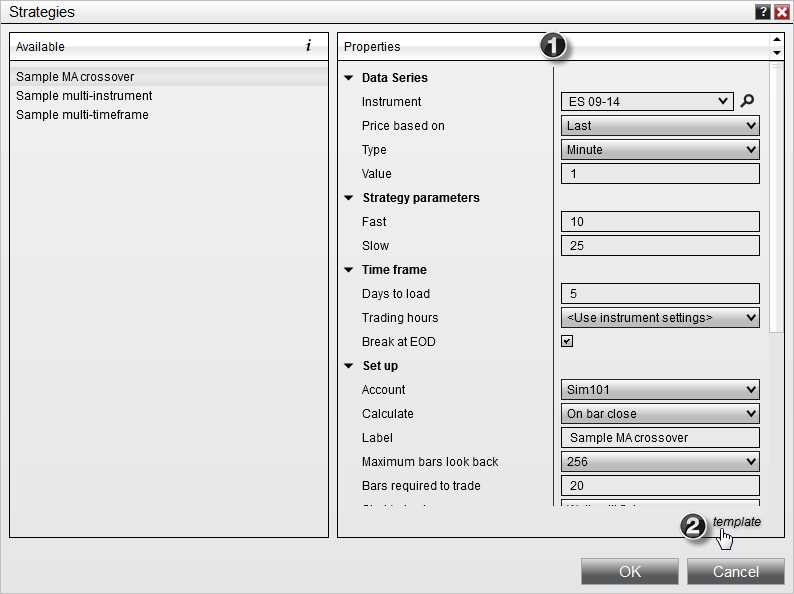
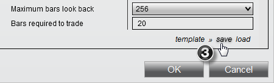
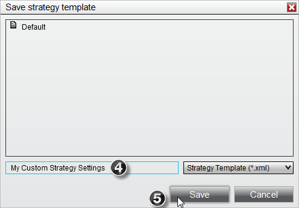
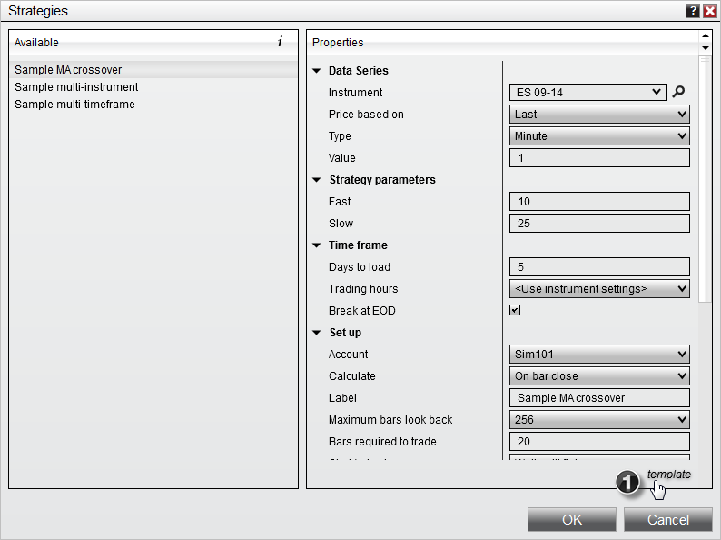
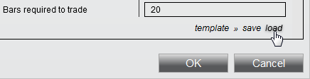
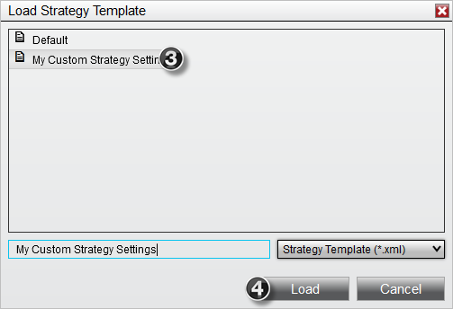
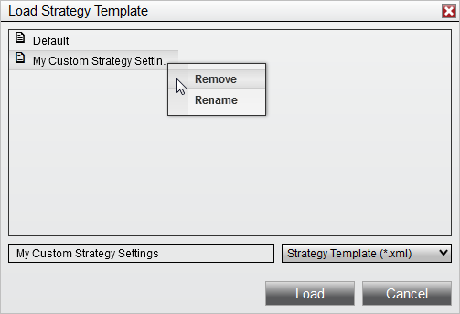

|
<< Click to Display Table of Contents >> Working with Strategy Templates |


|
Working with Strategy Templates
|
<< Click to Display Table of Contents >> Working with Strategy Templates |
|
NinjaTrader allows you to save your Strategy properties as a template that can be loaded or set as the default for new instance of a Strategy when starting the strategy to be used in real-time or for backtesting purposes. There is no limit to the number of templates you can save.
 How to save a strategy template
How to save a strategy template
Saving Strategy Parameters in a TemplateTo save your strategies's various properties in a template to be recalled for later:
1. Configured your desired Strategy Properties 2. Left mouse click on the template text located at the bottom right of the properties dialog

3. Select the option save which will open a Save Strategy Template dialog window

4. Enter a custom *name to identify the strategy template 5. Click the Save button

|
 How to load a strategy template
How to load a strategy template
Loading Strategy Parameters from a TemplateTo recall your previous saved settings:
1. Left mouse click on the template text located at the bottom right of the properties dialog

2. Select the option load which will open a Load Strategy Template dialog window

3. Select the desired template name from the list of templates 4. Click the Load button
 |
 How to remove a strategy template
How to remove a strategy template
Removing a Strategy TemplateTo remove a saved Strategy Template: 1. Open the Load Strategy Template dialog window (see "How to load a strategy template" in the section above) 2. Right click on the template you wish to remove from the Load dialog menu and select the Remove menu item

|